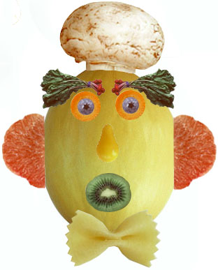
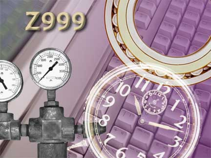
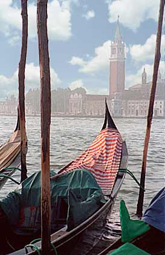

Растрова графіка - це форма комп'ютерної графіки, що базується на використанні пікселів, які утворюють растровий (піксельний) образ. У растровій графіці зображення представлені сіткою пікселів, де кожен піксель має свій колір і положення. Інформація про кожен піксель зберігається в матриці, де кожен елемент відповідає кольору пікселя. Растрові зображення зазвичай підходять для фотографій, реалістичних зображень та інших зображень з багато деталей, але вони можуть втрачати якість при збільшенні або редагуванні через обмежену кількість пікселів.

Рисунок 1.1 – результат виконання першого лесону (Work01)

Рисунок 1.2 – результат виконання другого лесону (Work02)

Рисунок 1.3 – результат виконання третього лесону (Work03)